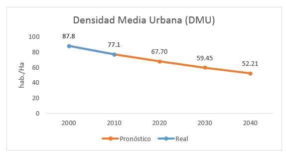

Entorno Urbano
Coordinador, Asesor y Secretario
| Función | Título | Nombre Completo | Institución/Empresa |
|---|---|---|---|
| Coordinador | Lic. | Javier Ramos | |
| Asesor | Arq. | Teresita Benítez | IMPLAN Torreón |
| Secretario | Arq. | Daniela Corral | IMPLAN Torreón |
Expertos Invitados
| Nombre Completo | Institución/Empresa |
|---|---|
| Aldo A. Sandoval Montemayor | Colegio de Valuadores |
| Arturo Niño de Rivera H. | CACLAC Empresario |
| Gabriel Calvillo Ceniceros | Director de Ordenamiento Territorial y Urbanismo |
| Javier de la Fuente G. | Secretario de la asociación de urbanismo región Monterrey |
| José Luis Palomino González | |
| José Sánchez Izquierdo | Consejo Municipal de Desarrollo Urbano |
| Mario Múgica Encerrado | Ordenamiento Territorial y Urbanismo |
| Mario Talamás Murra | MTM Taller de arquitectura |
| Oscar Murra Cofino | Ciudadano |
| René Mata Macías | UAC |
| Tomás Galván C. | Urbanismo Gómez Palacio |
| Víctor Hugo Torres Romo | Colegio de Arquitectos |
Escenario tendencial a 10 años
La Zona Metropolitana de la Laguna en cuanto a entorno urbano se caracteriza por:
Contar con una infraestructura deficiente y esto resulta en una metrópoli dispersa con un crecimiento desordenado, contaminada, sin agua suficiente, con alta tendencia al caos vial y con la movilidad urbana comprometida. La Laguna no es atractiva como lugar para vivir.
- Al 2014 la población sin acceso a alumbrado público en la ZM de la Laguna es de 34,923 habitantes. De seguir esta tendencia del 2.69% de la población sin acceso a alumbrado público al 2020 sería de 37,210 habitantes.
- Al 2014 la población sin acceso a agua de red pública en la ZM de la Laguna es de 25,446 habitantes. De seguir esta tendencia del 1.96% de la población sin acceso a agua de red pública al 2020 sería de 27,112 habitantes.
- Al 2014 la población sin acceso a red de drenaje en la ZM de la Laguna es de 48,555 habitantes. De seguir esta tendencia del 3.74% de la población sin acceso a red de drenaje al 2020 sería de 51,735 habitantes.
- Al 2014 la población con acceso a internet de la ZM de la Laguna es de 999,667 habitantes. De seguir esta tendencia del 77% de la población sin acceso a internet al 2020 sería de 1, 065,143habitantes.
Tener una baja densidad urbana es problemático. La mancha urbana está muy extendida, hay muchos asentamientos irregulares y lotes baldíos, también zonas deshabitadas. Esta situación hace difícil llevar los servicios a todos los habitantes e impacta negativamente en la calidad de los mismos. Además, contribuye a elevar los costos de mantenimiento e implementación y hace ineficiente el uso de los recursos. La Laguna es una zona poco atractiva para foráneos, carente de espacios públicos, accesibles e incluyentes.
- Entre 2000 y 2010 la Densidad Media Urbana (DMU) de la ZM de La Laguna disminuyó 12%. De seguir esta tendencia la DMU de la zona metropolitana sería de 52.21 hab./Ha en el año 2040.
- Recuperar la DMU del año 2000, representaría el crecimiento de 170 mil habitantes, sin crecimiento de la mancha urbana, lo cual según estimaciones de CONAPO se daría en 2020 cuando se cuente con 1,384,518 habitantes. 
La falta de espacios públicos genera poca cohesión social e inhibe la posibilidad de una mejor convivencia entre sus habitantes. La sensación de inseguridad se hace más presente, no hay lugares de encuentro, para la formación de la identidad y para el desarrollo sustentable de la región metropolitana. Hay mayor proclividad a la ruptura del tejido social y a la baja calidad de vida.
- Existen 10 espacios públicos de tamaño y equipamiento adecuado para cumplir funciones de cohesión social, los cuales son lejanos e inaccesibles a la mayor parte de la población.
Faltan planes y reglamentos actualizados y en general hay una baja observancia a lo existente. Esta ausencia se traduce en desorden en el uso del suelo, baja calidad del aire, identidad difusa y poco cuidado de la imagen urbana en general. Los servicios no están a la altura de las necesidades de los ciudadanos. La situación ha alejado inversiones y provocado que baje la plusvalía, ha aumentado la inseguridad y hay pérdidas económicas, en términos generales se ha perdido atractivo y competitividad.
- Sólo en los municipios de Torreón y Gómez Palacio se encuentran publicados reglamentos relativos al uso de suelo y lineamientos de construcción.
- No existen datos de observancia, como porcentaje de asentamientos irregulares.
Hay muchos barrios abandonados debido a la inseguridad, al deterioro de la infraestructura, a la falta de identidad y las dificultades en la movilidad. La población joven tiende a emigrar de la zona metropolitana.
- Entre 2010 y 2012 la tasa a anual de crecimiento de Viviendas deshabitadas es del 8%. De seguir esta tendencia las Viviendas de la ZM de la Laguna seria de 152,220 Viviendas deshabitadas en el año 2020
Total Vivienda 2010 Vivienda Deshabitada 2010 Vivienda Deshabitada 2012 Tasa anual de crecimiento de Vivienda deshabitada Proyección 2020 ZML 345,197 69,293 80,470 8% 152,220
Problemas a atender en orden de importancia:
| Problema a atender | Promedio |
|---|---|
| Una infraestructura deficiente | 4.0 |
| Falta de planes y reglamentos | 3.9 |
| Existe una baja densidad urbana | 3.1 |
| Faltan espacios públicos | 2.8 |
| Muchos barrios abandonados | 2.4 |
Bienvenida
Hora de inicio: 09:12 a.m.
Introducción
El Arq. Rafael Pérez Fernández expone los objetivos del Plan Estratégico Metropolitano.
Introducción por Lic. Rodrigo González Morales: Explicación de los resultados del taller anterior, presentación de los indicadores y futuros tendenciales de cada uno de los problemas de cada temática.
El Arq. Rafael Pérez explica la mecánica del evento. Que en la elección de futuro deseable se llenará un formato de manera individual; luego se realizarán rondas para enriquecer de 15 minutos tomando nota de forma conjunta e interactiva. Al final se hará la integración y propuestas de objetivos y metas.
Visión – Futuro Deseable
- Problema
- En 15 años ciudad con crecimiento ordenado redensificado.
- Que cuente con organismos capaces de potencializar los recursos, sistema integral de agua potable de calidad al 100% de la población.
- Reutilización de agua residual.
- Alumbrado público que utiliza energía renovable.
- Red de drenaje pluvial que evita las inundaciones en la ciudad.
- 30% de las calles construidas con concreto hidráulico.
- Contar con infraestructura de internet al 75% y la población el 75% paga sus servicios (agua, drenaje).
- Tener vialidades urbanas interconectadas eficientes y amplias respetando la movilidad de las personas (ciclo vías).
- Importancia de contar con infraestructura adecuada para población vulnerable (discapacitados).
- Una visión metropolitana de toda la zona conurbada.
- Plantas tratadoras suficientes y eficientes.
- Se mantiene eficiencia en la operación y mantenimiento de las redes de infraestructura.
- En 25 años se tiene planeado el crecimiento de la población en base a la vocación de infraestructura.
- Implementación de edición y capacitación de manuales de infraestructura estándar para la zona metropolitana del cumplimiento obligatorio para todos los desarrolladores.
- Metrópoli con tecnología aplicada a energías renovables.
- Transporte público de buen nivel y buen flujo de movilidad urbana, saneamiento de mejora de redes hidráulicas. Inversiones públicas eficientes y transparentes.
- Problema
- Adoptar planes modelo de otras ciudades, comité de vigilancia y seguimiento de planes y reglamentos.
- Metrópoli con reglamentos homologados entre las ciudades de la ZML, hay orden jurídico en materia de usos de suelo.
- ZML con un plan de desarrollo urbano metropolitano actualizado con atención especial en los usos de suelo mixtos.
- Facilidades en otorgamiento de licencias de construcción.
- Manejo eficiente en la operación, ejecución y aplicación de los planes y reglamentos.
- Creación de un IMPLAN metropolitano.
- Plan influyente de todos los sectores, avalado por la sociedad civil, con buena difusión y avalado por la ciudad.
- Que el comité tenga autoridad para que se cumpla y que exista un organismo acreditado que sea el que este actualizando y revisando reglamentos metropolitanos.
- Respetar el plan director, tener un gobierno en línea (gobierno digital), ser un gobierno firme.
- ZML se caracteriza con contar un observatorio urbano donde se da seguimiento a las acciones planes proyectos e indicadores.
- Que el consejo metropolitano tenga facultades para dar seguimiento y observancia al programa metropolitano, reglamentos homologado y congruente al plan metropolitano.
- Plan sin privilegiar sectores.
- Problema
- Tenemos fraccionamientos verticales, centro histórico regenerado y recuperar la vivienda deshabitada, índice 0 de vivienda desocupada.
- Establecer en el plan e desarrollo acciones que promuevan redensificación.
- Crecimiento equilibrado con la infraestructura.
- Adecuada zonificación adecuada en usos y destinos.
- Inexistencia de lotes baldios en el centro urbano.
- Usos mixtos en el centro urbano.
- Rescate de sectores urbanos abandonados.
- ZML tiene una cultura de adaptación al cambio.
- ZML segura que permite retener a la población.
- Ciudad compacta.
- Planes actualizados y dinámicos.
- ZML EL 30% De la vivienda sea vertical.
- Optima articulación vial, congruente continuidad en los usos de suelo.
- ZML ocupa el 75% de los vacíos urbanos.
- Problema
- Áreas verdes distribuidas aprovechando las áreas de donación municipal.
- Metrópoli con % áreas verdes superiores por encima de la norma mundial (15m2/hab).
- Espacios públicos con mantenimiento permanente.
- Población consiente para dar mantenimiento a espacios públicos.
- Áreas de sesión debidamente equipadas.
- 90% de la población tienen acceso a espacios urbanos.
- Que exista una forma de evaluar estándares de calidad de los espacios públicos.
- Metrópoli segura para que la gente vuelva a los espacios públicos (retomar las calles).
- Integración ciudadana en la operación y mantenimiento de los espacios públicos.
- 10% del área de la mancha urbana sean áreas verdes.
- Adaptar los inmuebles del centro histórico catalogados como casas de cultura, restaurantes, museos.
- Ciudad reforestada con espacios públicos recuperados.
- Problema
- Barrios integrados a la dinámica social, cultural y laboral de la ciudad.
- Barrios totalmente seguros y con una dinámica interinstitucional para.
- Barrios con equipamiento de comercio, servicios, con infraestructura escolar y fuentes de empleo cercanos.
- 75% de los barrios están en proceso de regeneración.
- Barrios con vivienda digna.
- Barrios con empoderamiento ciudadano.
- Barrios autosuficientes y socialmente sostenibles.
- Barrios seguros caminables, iluminados y con transporte público.
Propuesta de objetivos y metas
Se integraron las visiones y se agregaron a las que ya se tenían por parte de la mesa. Se llenaron los formatos.
Conclusión
Se establecieron las conclusiones de la mesa.
Agradecimiento y despedida
Hora de término: 01:25 p.m.